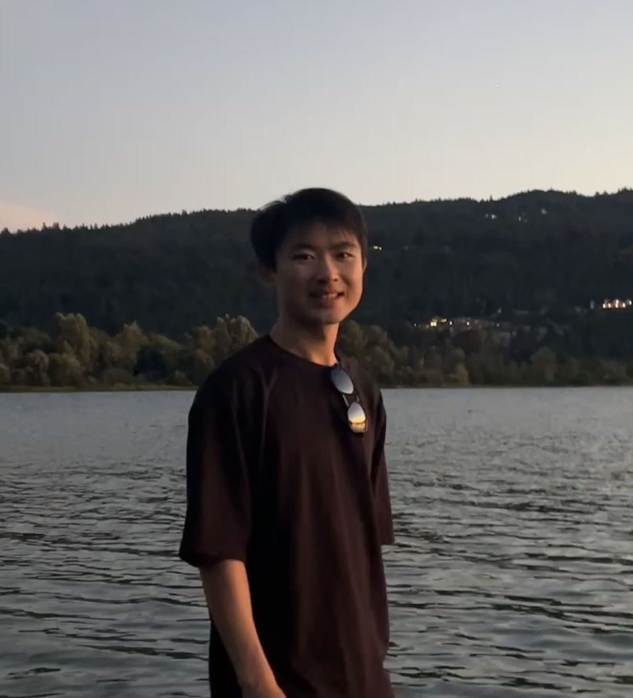

Jie Lei
|

Lake Sammamish, Bellevue, Aug 2023 |
I am a research scientist at Meta AI, Seattle. My primary research interests are vision-and-language and video modeling. I received my PhD in Computer Science from UNC Chapel Hill in 2022, advised by Tamara L. Berg and Mohit Bansal. I received my bachelor's degree in Computer Science from Yingcai Honors College, University of Electronic Science and Technology of China (UESTC) in 2017. I am a receipt of the Adobe Research Fellowship and the CVPR 2021 Best Student Paper Honorable Mention award. Email: jielei [at] meta.com |
News
- Feb 2023 » Two papers accepted at CVPR 2023.
- Feb 2023 » Our tutorial Knowledge-Driven Vision-Language Pretraining is accepted at CVPR 2023, see you in Vancouver.
- Dec 2022 » Our tutorial Knowledge-Driven Vision-Language Pretraining is accepted at AAAI 2023.
- May 2022 » I graduated with a PhD in Computer Science from UNC.
- Mar 2022 » Our workshop T4V: Transformers for Vision is accepted at CVPR 2022.
- Jun 2021 » We are hosting VALUE Challenge for video and language understanding at ICCV 2021 CLCV workshop, please join!
- Jun 2021 » ClipBERT is awarded the CVPR 2021 Best Student Paper Honorable Mention! 😍
- Feb 2021 » Received Adobe Research Fellowship, thanks Adobe!
- Jan 2021 » Research Internship @Facebook AI, working with Licheng Yu, Xinlei Chen and Ning Zhang.
- May 2020 » Research Internship @Microsoft, working with Linjie Li, Luowei Zhou, Zhe Gan and Jingjing Liu.
- May 2019 » Research Internship @Tencent AI Lab, Seattle, with Liwei Wang, Yelong Shen and Dong Yu
- Aug 2017 » I joined UNC as a PhD student.
Publications & Preprints
Revealing Single Frame Bias for Video-and-Language Learning
VindLU: A Recipe for Effective Video-and-Language Pretraining
Vision Transformers are Parameter-Efficient Audio-Visual Learners
PERCEIVER-VL: Efficient Vision-and-Language Modeling with Iterative Latent Attention
Language Models with Image Descriptors are Strong Few-Shot Video-Language Learners
ECLIPSE: Efficient Long-range Video Retrieval using Sight and Sound
Resin-11: Schema-guided event prediction for 11 newsworthy scenarios
LoopITR: Combining Dual and Cross Encoder Architectures for Image-Text Retrieval
VIMPAC: Video Pre-Training via Masked Token Prediction and Contrastive Learning
QVHighlights: Detecting Moments and Highlights in Videos via Natural Language Queries
VALUE: A Multi-Task Benchmark for Video-and-Language Understanding Evaluation
Adversarial VQA: A New Benchmark for Evaluating the Robustness of VQA Models
mTVR: Multilingual Moment Retrieval in Videos
Unifying Vision-and-Language Tasks via Text Generation
Improved Pre-Training from Noisy Instructional Videos via Dense Captions and Entropy Minimization
Less is More: ClipBERT for Video-and-Language Learning via Sparse Sampling
What is More Likely to Happen Next? Video-and-Language Future Event Prediction
TVR: A Large-Scale Dataset for Video-Subtitle Moment Retrieval
MART: Memory-Augmented Recurrent Transformer for Coherent Video Paragraph Captioning
TVQA+: Spatio-Temporal Grounding for Video Question Answering
TVQA: Localized, Compositional Video Question Answering
Weakly Supervised Image Classification with Coarse and Fine Labels
Projects
AnimeGAN: Create Anime Face using Generative Adversarial Networks,
A simple GAN model that could automatically generate anime girl faces.
Miscs
- My Chinese name is 雷杰. I am from Sichuan, the hometown of pandas.
- I am
a big fanof Attack on Titan.